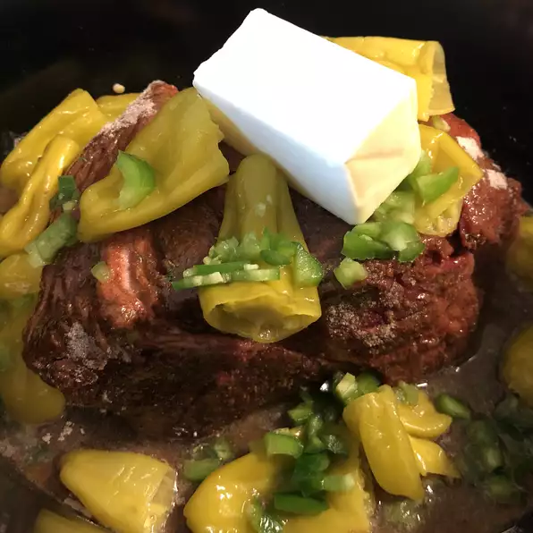

Mississippi Pot Roast

Ingredients
- 1 (3 pound) chuck roast
- 1 (12 ounce) jar pepperoncini
- 2-4 ounces pepperoncini juice
- 1 (1 ounce) packet au jus gravy mix
- 1 (0.4 oz) package buttermilk ranch dressing (such as Hidden Valley®)
- 1 stick (quarter lb) of butter
- salt and ground black pepper to taste
Directions
- Combine chuck roast, pepperoncini, pepperoncini juice, au jus mix,
buttermilk ranch dressing, butter, salt, and pepper in a slow cooker.
- Cook on Low until roast is fork-tender, about 8 hours.
- Pull chuck apart with 2 forks. Cover with aluminum foil to keep warm.
Other Recipes